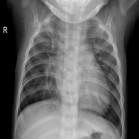
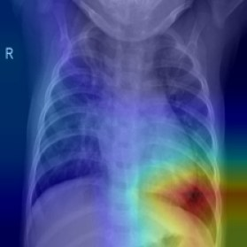
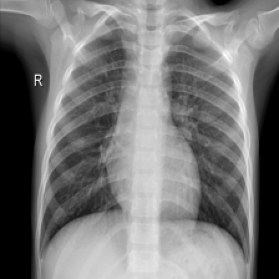
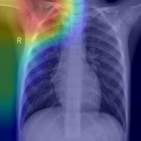
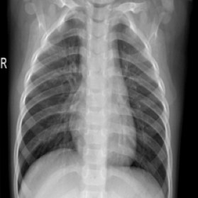
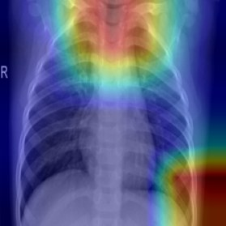
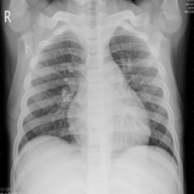
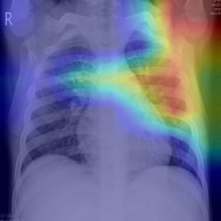

Chest X-ray pneumonia classifier
A ResNet18 that flags pneumonia on pediatric chest X-rays, small enough to run on an ordinary CPU. I cared less about the headline score and more about whether it could be trusted.
- Split the 5,856 images by patient, so the same child never appears in both training and validation.
- Picked the decision threshold on validation only, and reported sensitivity and specificity, not just accuracy.
- Used EDA and Grad-CAM to look for shortcuts, then compared four models and three learning rates to test the idea.
- Exported to ONNX, quantized to INT8, and deployed a Gradio demo on Hugging Face and in Docker.
0.96Test AUC on 624 unseen images
2 of 390Pneumonia cases missed
11 MBINT8 model, 4× smaller
41 msPer image on CPU, 2.4× faster







